概要
監視カメラ映像などにおいて人物領域のde-anonymization（匿名にしていた情報をオープンにされること？）を防ぐための研究。RoIに対して実行することで人物再同定（Person Re-identification）の精度を落とすことに成功している。
監視カメラ映像などにおいて人物領域のde-anonymization（匿名にしていた情報をオープンにされること？）を防ぐための研究。RoIに対して実行することで人物再同定（Person Re-identification）の精度を落とすことに成功している。
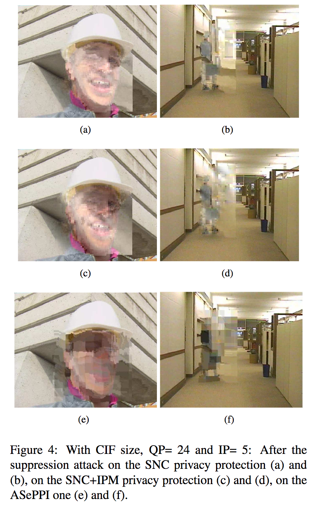
本提案手法であるAdaptive Scrambling enabling Privacy Protection and Intelligibility (ASePPI)により、匿名性が保たれることが明らかになった。これは、従来法よりも優れている。
遠隔操作ロボットのための，ロボットカメラの自動姿勢決定．作業野を見やすくするカメラ姿勢を自動で決定する．
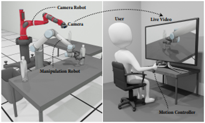
(a) 経路のチェックポイントを見せる(b) 経路を矢印で書く (c) ARエージェントが移動方向を見てる (d) ユーザに対するロボットの位置を示唆する
外科手術などに実用性ありそうでいい．
適切なロボット動作のダイナミクスを定義して実装し，ユーザ評価もちゃんと行っている．
BestPaper Nominee．ところで被験者に1時間拘束で10ドル払ってるらしい．
他人に情報が拡散しないよう、「ブラー」と「ブロック」というふたつの（人間に対する）難読化法を検証。53名のユーザについて画像の満足度、情報量などの側面から調査した。
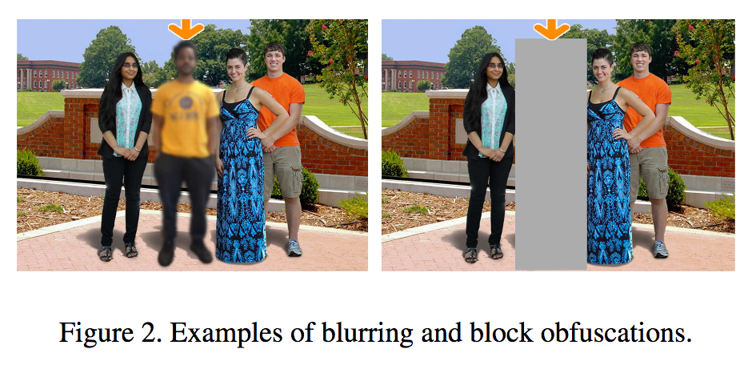
結果から、ブロック（blocking）の方がブラー（blurring）よりも特定されにくいということが判明した。しかし、画像の質やSNSなどに投稿するための満足度（e.g. satisfaction, enjoyment, social presence, likability）としては欠落してしまう。将来的にはユーザのプライバシーを保護するための手法が求められる。
ロボットの移動意思をARで伝える方法について，図の4種類の方法を実装して比較してみた．
ロボットの身体の方向のみに関連した情報提示がベースラインよりも作業効率を顕著に向上させた． また，ロボットとの共同作業感と動きのわかりやすさの間にトレードオフが発生することも 分かった．
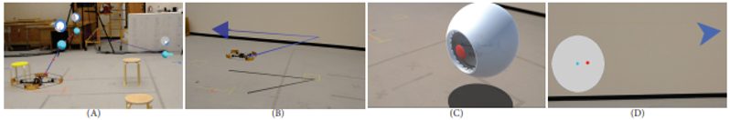
(a) 経路のチェックポイントを見せる(b) 経路を矢印で書く (c) ARエージェントが移動方向を見てる (d) ユーザに対するロボットの位置を示唆する
移動方向の表示に関する研究は継続的に行われているが，AR上での表示における調査をちゃんと（網羅的に）行っていることと， 結果が面白い．
BestPaper Nominee.
ロボットの意思決定に，人間とロボットの共同作業の信頼度を組み込んだ．手法的には，部分観測可能マルコフ決定過程(POMDP)の機械学習に信頼度をパラメータとして混ぜた． それにより,ロボットは （１）人からの信頼度を推定 （２）人の行動における自分の行動の影響の理由付け （３）長期的にみたチームパフォーマンス最大化可能な行動の選択 が可能に．
実際にパフォーマンスを高められることを確認した．なお，信頼度を最大化してもパフォーマンスは改善しなかった．
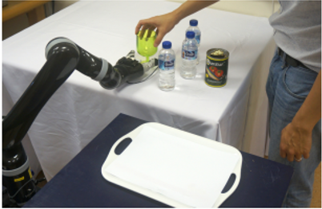
信頼度という観点が面白く，理論モデルに基づく実装までこぎつけているのがよい．信頼度最大化がパフォーマンスを改善しないことも面白い．
BestPaper Nominee.
間接言語行為（ISA）の有無によって，タスクベースの人間-ロボット間対話においてどれほど役に立つのか，ISAの理解能力なしにロボットはどれだけ機能するか調査した．
WoZによる実験をしてみた．各条件について，人によるISAの使われっぷりを見る．
人がロボットに対してどう非言語行動をとるかについてはまだまだ未調査の部分が多いが，そのうちの一つ，ISAについての道を示した重要な論文．
BestPaper Nominee.
理学療法，スポーツリハビリ等の各種セラピーに支援ロボットを導入した場合にどうインタラクションしたらよいかについて，セラピストへのヒアリングを基に論じる．
ロボットのセラピーへの従事の利益があるという我々の仮説を裏付けるため，まず下の二つを聞いてみた．
さらに，有効なHRI戦略を導くため，聞いてみた．
ロボットは，患者の自律的エクササイズへの意識の低さに対して支援を行える．スマホなどの既存手法よりも先回り的な支援を行える．
この結果を踏まえ，HRI戦略のデザインの方法論を示す.
聞き取り調査の結果を論文にしたいならこの論文を読むのがよい．
BestPaper Nominee.
LSTMの拡張するgLSTMの提案。画像から抽出された意味情報をLSTMの各ユニットに入力として追加し、モデルと画像コンテンツを密接に結合させる。また、短い文に偏らないように、ビーム探索時に正規化。
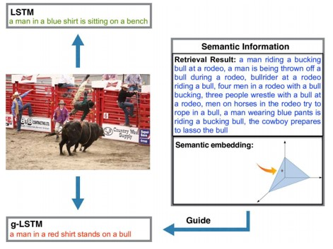
LSTMは畳み込みで得られた画像情報から単語ごとに文章を生成する。しかし、長い分の場合には、プロセスが継続するにつれて画像情報が薄くなる。これは、シーケンスの最初に出力された単語も同様。そこで、ゲートとセル状態の計算にグローバルな意味情報を追加。意味情報は、画像とその説明から抽出し、単語列生成の過程でガイドとして使用する。
一人称視点カメラによるライフログをアニメ調に変換することでプライバシー性を高める研究。セグメンテーションとブレンディングのみならず、エッジ強調、さらには物体（e.g. テレビ、本）をクリップアートに置き換えることでより理解しやすくプライバシーを保護するアニメ調に変換。
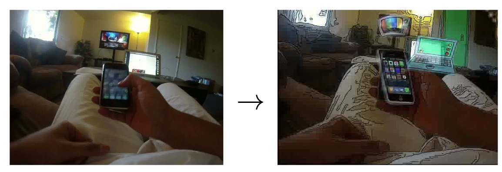
AMTによりユーザスタディも行なった結果、プライバシーを保ちつつ視覚的にも理解しやすい（e.g. 行動認識）動画ストリーミングを流すことに成功した。
入力画像に対して非読性を高めるため、ノイズを付与して内容がわからないように加工する（入力と出力は図を参照）。同タスクに対してGenerative Adversarial Networks (GANs)の枠組みを導入した。提案法をAdversarial Pertubation Mechanismと名付け、攻撃ネットワーク（A）と攻撃者を欺く難読化ネットワーク（O）の敵対的学習により学習を進める。学習においてプライバシーとユーティリティ（オープン化）のトレードオフはパラメータにより調整可能である。基本的な構造はDCGANに基づいていて、OはDenoising AutoEncoder。
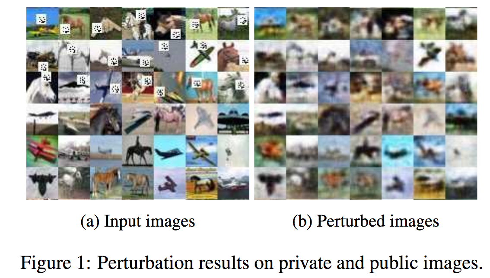
攻撃は画像中にQRコードが埋め込まれているかどうかで決まり、いかに敵対的ネットがQRコードの位置を検出できるかどうかで評価する。精度は75%（エラー率25%）となった。
人物のセグメンテーションにより人物の検索性を低くする研究（Person De-identification）。服装レベルでのセグメンテーションについてもうまくいっている。本論文で提供するモデルは顔認識のみでなく服装や髪型といった特徴についても非読性を向上させる。手法はGANを参考に構築されており、（物体検出も組み合わせつつ）セグメンテーションを実行する。広義には人物を中心とした背景差分を行なっている。さらに、DCGANにより予め顔画像を学習する。
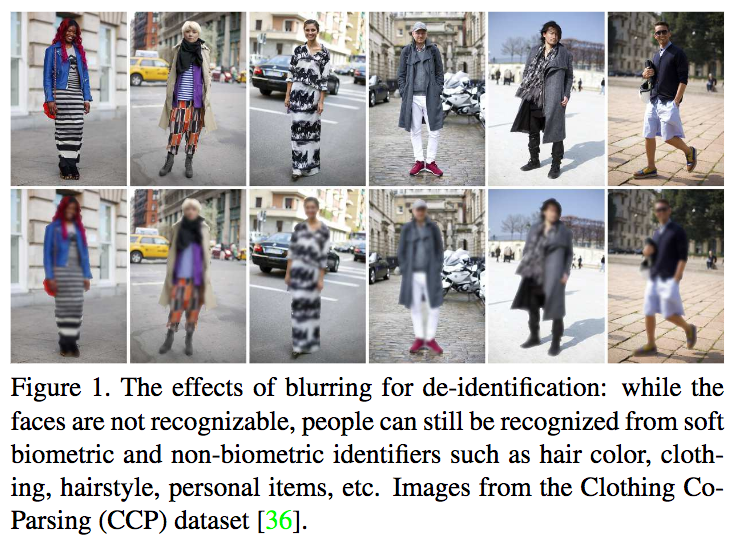
Clothing Co-Parsing (CCP)のファッションアイテムのセグメンテーション、Human3.6M datasetの背景マスクを正解として学習を行なった。結果の例は図に示すとおりである。
生活雑音で活動量を測り，活動量を共有することのできるソーシャルネットワークなロボットを提案．生活雑音を取るだけならプライバシーに配慮できて良いし，多対多でもいい感じに働く． 友人間ソーシャルコミュニケーションの実験してみて，プライバシー侵害を感じずに繋がってる感が出ることを確認した． ついでにちゃんとしたものも作った．
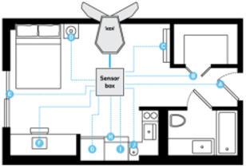
うまくやってる感．これってロボットインタラクションなのかな？
BestPaper Nominee.
著者らが作った，擬人ロボットのコレクションデータベースABOTを活用して，擬人ロボットの見た目について分析する． ABOTは200の現実の擬人ロボットの，画像，パーツリスト，4つの観点 （Body-Manipulators, Surface Look, Facial Features, Mechanical Locomotion） におけるスコアを含む．
本研究では，調査のうえ先述の見た目に関する4つの観点を定義し，またロボットの擬人性を推定しやすい特徴について解明した． そのスコアリングシステムはWebで公開する．
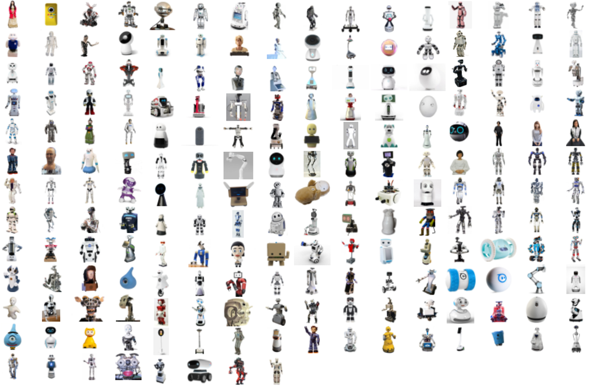
盛りだくさん．
BestPaper Nominee.ところで被験者に0.5ドル払ったらしい．
“レンダリングされた”ロボット顔のデザインを仕分け．デザイン空間を定義し，分布を調査する． 157のロボット顔を76属性のデザイン空間に落とす． 文脈に応じてどのようなリアルさ・具体性が好まれるのか， また顔の重要なパーツの有無に対する，適したロボットの作業について論じる．
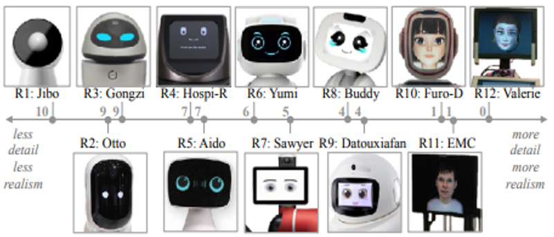
いろんなロボット顔のサーベイが大変なのは言うまでもないが，ちゃんとシステマチックに論じているところが偉い． まさしくワシントン大的貢献．
BestPaper Nominee.
既知の視覚的概念の分類子を構成するために、コンテクストの依存性に着目した手法を提案。コアアイデアは、複数の単純な概念を組み合わせることによる複雑なコンセプトの開発。赤ワインの赤と、トマトの赤では意味は異なる。形容詞(赤)と物体(ワイン、トマト)の間にはコンテクスト依存性がある。このようなコンテクストを全てビックデータで学習することはナンセンスなため、独立した識別器を合成する。
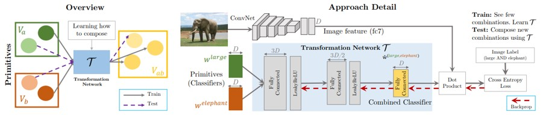
学習： primitive（大きい、象）などの組み合わせのセットにアクセス。これらのprimitiveの各々を線形分類器（w）を学習することによってモデル化。これらの分類器を合成し、その組み合わせの分類器を生成する変換ネットワークを学習。
ロボットのできないことを伝える．何をやろうとしてダメで，なぜダメなのかを伝える． 動きの軌跡の最適化問題とみなし，成功パターンと失敗パターンの 類似性と差の大きさの評価を提案．
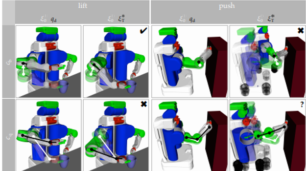
運動学を解くという割と確立された（けどちゃんと検討するのは面倒な）手法的な面を水平思考して，ロボットの失敗談を伝えるという面白さにつなげている．
BestPaper Nominee.
解説動画(お料理動画)におけるアクションとエンティティ間をリンクさせる教師なし学習を提案。グラフ表現によって、言語および視覚的モデルを共有することで、ビデオ内の視覚的・言語的曖昧さを回避する。映像中の作業に対して、言語と動画の2つのワークフローを出力し、最適化を施す。WhatsCookinデータセットより、2000の字幕付き動画を使用。
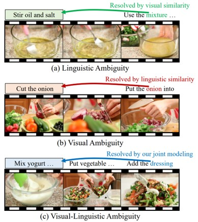
曖昧さ回避
図は、動画中の曖昧なアクションとエンティティを示す。(c)の場合、3つ目のフレームで“ドレッシングを加える”とあるが、果たしてどのドレッシングなのか？というあいまいさが生じる。この場合のドレッシングはヨーグルトを混ぜたものになる。つまり、“ドレッシング”をエンティティ、“混ぜる”をアクションとしてこの2つをリンクさせる。
操作者と遠隔ロボットが部屋レイアウトを共有する空間において，ロボットの遠隔操作をARで支援する方法論についてプロトタイピングし，議論．飛行ドローンの動きを簡単にわかるようにするには？図(a)視体積の表示，図(b)ロボットの吹き出し的にカメラ映像表示，図(c)端にカメラ映像を固定表示． 結果，3方式はカメラ映像をただ見ただけよりも遠隔操作効率が顕著に向上した． また，カメラ映像を見せる方式(b)，(c)はカメラ映像とロボットの注視が分散してしまい，比較的遠隔操作効率が悪かった．
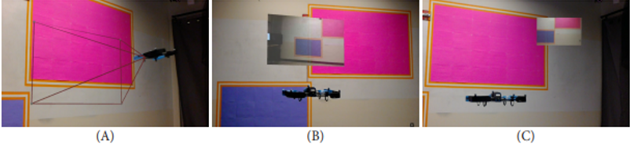
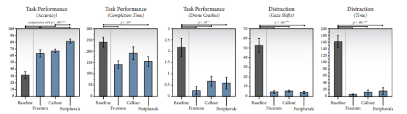
特にハッとする面白さは感じないが，各方面がなんとなくやっていたことについて，改めて調査に取り組み， サーベイと実験をちゃんとやって，定量的・定性的評価をちゃんとやった点が評価されたか． 実験デザインも特に面白く感じないが，当たり前のことをやってちゃんと結果が出るようなデザインをしている．
BestPaper Nominee.
ブラックボックスのAdversarial Attacks（敵対的攻撃、摂動ノイズ）を提案する。本論文での画像攻撃は局所的探索により数値的近似を行い、ネットワークの勾配に埋め込むことである。
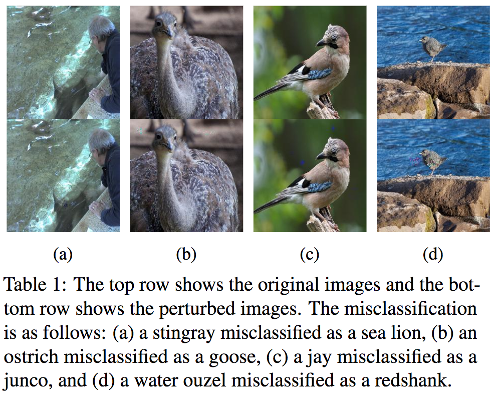
画像が結果例である。複数の画像識別が誤りを含んでいる。
動画認識タスクにおいて、Google Cloud APIの認識を騙すため動画像に対して意図的に画像挿入を行う攻撃を仕掛ける。攻撃はN秒間に一度、（動画の内容とは全く異なる）任意の画像を埋め込むことで、Google Cloud APIの出力を騙すことに成功した。
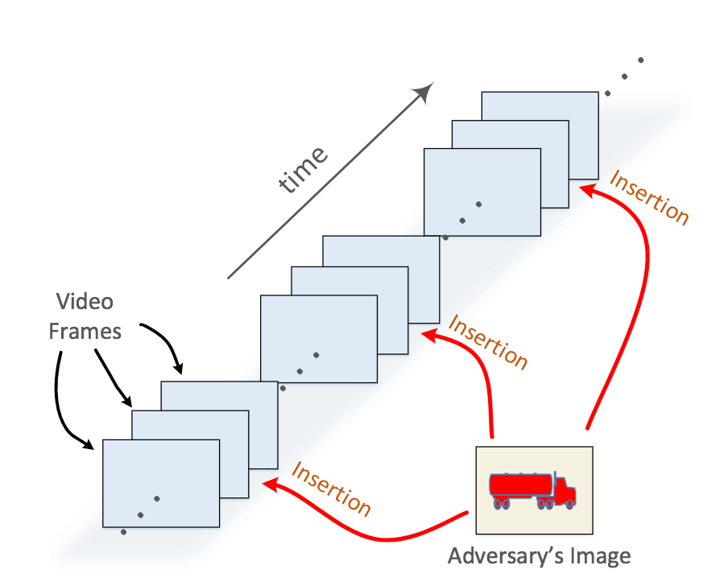
実験の結果、2秒間に一度、画像挿入攻撃を仕掛けると認識誤りを引き起こすことが判明した。動画像は25FPSで構成されるため、50フレームに一度攻撃を仕掛ければ十分であった。
本論文のような攻撃をYouTubeに埋め込まれると動画タグが自動でつけられなくなるという恐れがある一方で、例えばFacebookなどの動画に意図的かつ人の目にはわからないように画像を埋め込めると（プライバシー保護の面で）外部からは検索しづらくなる。（やはり使い方次第ということか）
タイトルの通り、Cut, Paste and Learn（物体の切り抜き、任意画像への埋め込みにより物体検出の学習を実行）により自動アノテーションを行い、学習画像を大量に生成することに成功。ここで問題になるのは切り抜いた物体と画像埋め込みの際のアーティファクト（artifact）であり、自然な埋め込みのみならずアーティファクトを無視して学習する手法を提案した。CutのフェーズではFully-Convolutional Networks (FCN)を用いてセグメンテーションを実行するがさらに後処理にて境界線を綺麗にした。PasteのフェーズではGaussian/Poisson Blendingによりアーティファクトをできる限り削減した状態で背景画像に対して埋め込みを行う。データ拡張についても、2次元3次元の回転、オクルージョンなど行う。
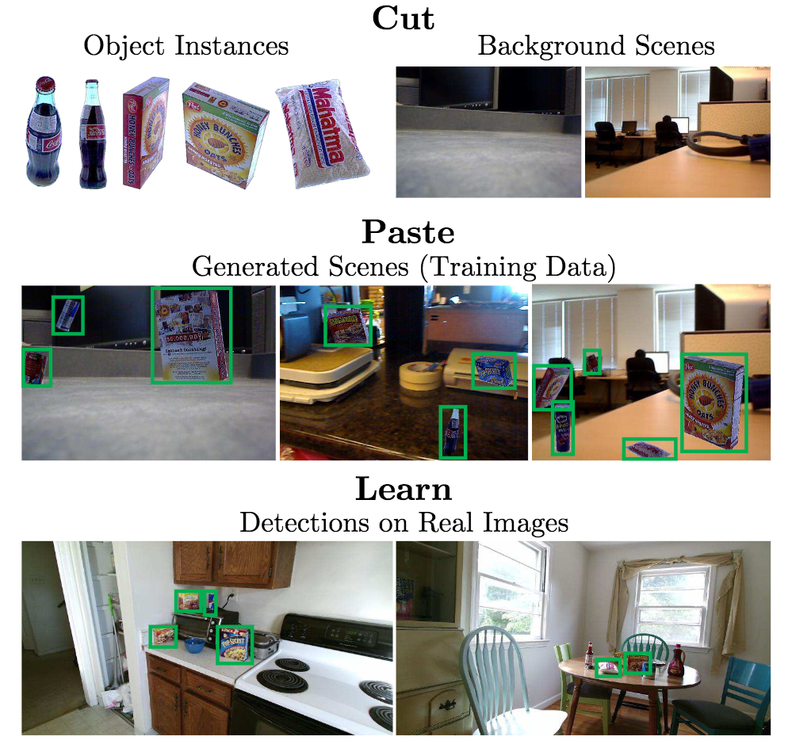
Blendingにおいては{なし, Gaussian, Poisson}の全てを混ぜる手法が最もよくオリジナル画像のみと比較して8AP向上。データ拡張についても全ての拡張{2D rotation, 3D rotation, Truncation, Occlusion, Distractor}を行う拡張が最も良かった。ベンチマークに対して相対的に21%の向上が見られた。クロスドメインの学習においても10%の向上が見られたと報告。
既存の画像キャプションデータセットには存在しないオブジェクトカテゴリを記述できるNovel Object Captioner (NOC)の提案。物体認識データセットからの画像と、ラベル付けされていないテキストから抽出された外部ソースからの意味的情報を利用。 MSCOCOにはないImageNetのオブジェクトカテゴリのキャプションを生成。
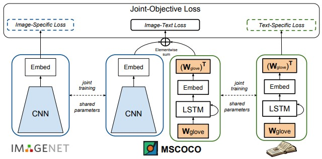
画像とキャプションが対になっていないデータや、様々なソースを使って学習することができる。
pre-training済みモデルのembedding空間を使用できるようにし、zero-shotなデータでもキャプションを生成できる。
CNNベースの認識モデル、LSTMベースの言語モデル、キャプションモデルは、別々のソースで同時に学習。しかし、パラメータを共有することで、未知のオブジェクトのキャプションが可能となる。
シーンの全体理解。オブジェクトの数とそのカテゴリ、ポーズ、位置などの情報をエンコードし、シーンのコンパクトかつ表現力豊に解釈可能な表現の提案。decoderとencoderにより、XML形式の言語表現を実現。特に、encoderは、Renderingの逆であるDe-renderingを実行することで、入力画像をscene XMLに変換する。
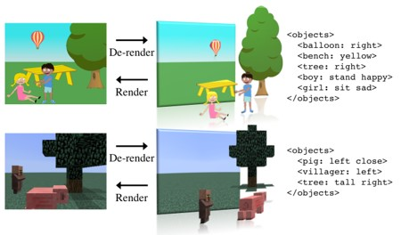
従来研究では、encorderとdecoderベースの深層学習を使用した画像表現を提案してたが、その出力は解釈不可能であるかシーン単一のオブジェクトのみの説明である。そこで、シーン全体かつ解釈可能な表現を出力するモデルの提案。
マインクラフトベースの新しいデータセット。
de-rendering：入力画像からセグメントを生成し、オブジェクトのプロパティを解釈。推測結果を統合し、元の画像を再構成する。
Visual Diarog：AIエージェントが人間と、画像に関した対話をするタスクを目標とする。エージェントが、画像に対する質問に、対話履歴から文脈を推測し正確に回答する。チャットデータ収集プロトコルを開発し、Visual Dialogデータセット(VisDial)を作成。COCOの120kの画像に10の質問と回答ペアを含む1つのダイアログが含まれており、合計は1.2Mのダイアログ質問回答ペア。
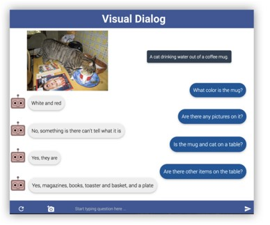
VQAとは異なる、Visual Dialogタスク。
3つのエンコーダ2つのデコーダからなるVisual Diarogモデル。
コード、モデル、データセット、ビジュアルチャットボックスを公開中。
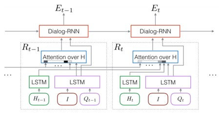
「動画は単一画像を表す特徴空間上におけるManifoldとして表すことができる」という考えをもとにしている。その場合、線形な時間変化に対して各フレームを表す特徴量も線形な変位をするのが妥当であり、制約を加えることでそのような特徴空間への埋め込みを学習させる。
t-1, t の埋め込みベクトルzt, zt-1からt+1の埋め込みベクトルzt+1を予測し、それからt+1の画像復元を行うモデルを考えるが、以下の３つの要素を加える。（1）zの時間的変位のcos類似度が近くなるようにする、（２）max-pooling(出力m)とargmax-pooling (出力p)を行い、t+1のz(=(m, p))を求める際は、pを線形外挿により求める、（3）未来の不確実性の対処として、潜在変数δを定義。 argmax-poolingはソフトな近似関数を定義することで逆伝搬可能にし、δは学習時はサンプルごとにSGDにより最適化し、テスト時はランダムサンプリング。
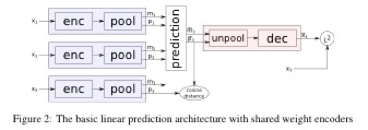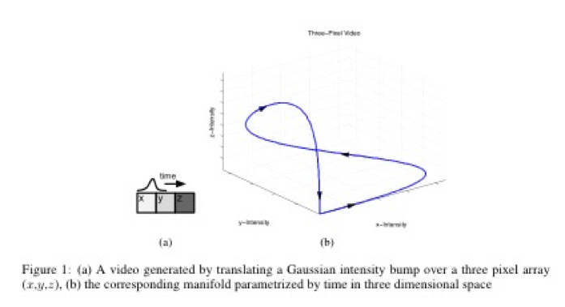 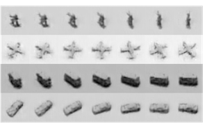
「CNNは理論上任意の関数を近似できるが、その構造自体に汎化性能をあげるようなPriorが含まれている」という考えのもと、ランダム初期化されたCNNを用いて高いレベルの画像復元、ノイズ除去などを行った。 また、CNNのPrior をさらに裏付けるものとして、自然画像を復元するより、ノイズ画像を復元する学習の方がiteration数がかかることも示された。深いネットワークの方が復元性能が高かった。
ノイズ画像ｚをencoder-decoderモデルに入力して、生成された画像を欠損画像にMSEを近づけるように学習。 注意点として、完全に学習仕切ってしまうと欠損画像と同じものが出るだけなので、学習をある程度のiterationで止めると、復元された画像が得られる。 CNNのPrior をさらに裏付けるものとして、自然画像を復元するより、ノイズ画像を復元する学習の方がiteration数がかかる。
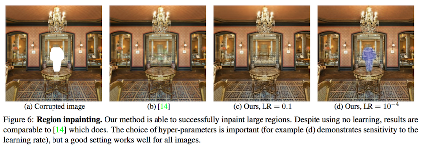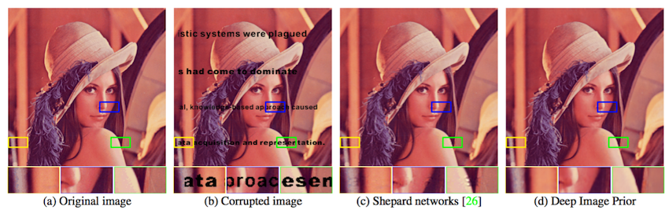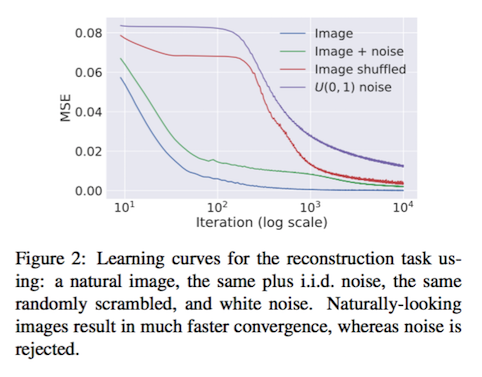
動画キャプションのため、動画中から時系列のRegions-of-Interest（RoI）を獲得する。動画中のアテンションを獲得するDual Memory Recurrent Model（DMRM）を提案して時系列の大域的構造/特徴とRoI特徴を対応づける。これにより、人間のように動画を粗く流し見することに相当するモデルが構築できる。さらに詳細に特徴を評価するため、意味的な教示（semantic supervision）を行う。
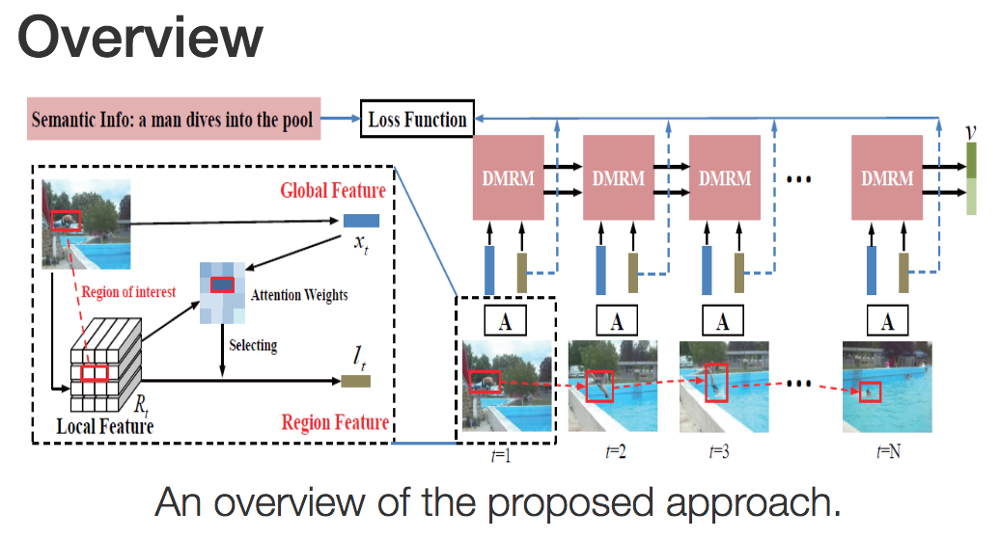
評価にはMicrosoft Video Description Corpus (MSVD)やMotreal Video Annotation (M-VAD)を採用。動画キャプショニングにおける評価法、BLEU-4, CIDEr, METEORにてState-of-the-artな精度を得た。
時系列の理由付け、（物体や人物行動などの）関連性を学習するTemporal Relation Network (TRN)を提案する。TRNはフレーム数を変えながら特徴表現を行い、前後の時系列を対応づけることで理由付けを行う。このネットワークを学習して時系列の対応付けを行うため、3つの動画データベースーSomething-Something（ビデオ数108,499）, Jester（148,092）, Charades（9,848）ーを用いた。
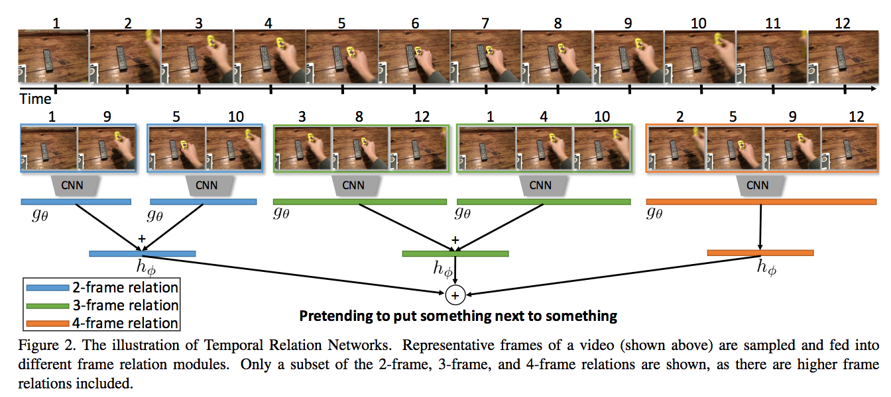
TRNは場面によりC3DやTwo-Stream ConvNetsよりも高精度。ビジュアルの結果は動画を参照。
一人称視点の画像からゴールリングに到達するまでのバスケットボール選手の動線を生成する。本論文では3D位置や頭部方向も記録する。同タスクを実行するため、まずは画像空間から12Dのカメラ空間に投影を行うEgoCam CNNを学習。次に予測を行うCNN（Future CNN）を構築、さらに予測位置やゴールまでの位置が正確かどうかを検証するGoal Verifier CNNを用いることでより正確な推定を行うことができる。
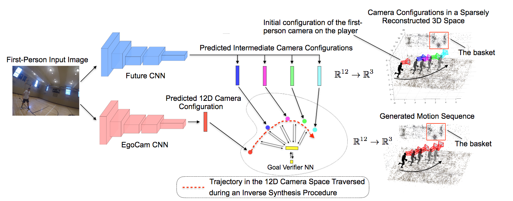
複数のネットワークの出力（ここではEgoCamCNNとFutureCNN）を検証するVerification Networkという考え方は面白い。他のネットワークの出力を、検証用のネットワークにより正すというのはあらゆる場面で用いることができる。RNN/LSTM/GANsなどよりも高度な推定ができることが判明した。
Finding Tiny Facesを元ネタにして、画像中から微小な顔を検出する手法を提案。元ネタではコンテキストから小さな顔を検出していたが、本論文では画像の類似性（顔は大小に関わらず特徴が類似する）を考慮して極小な顔を検出した。手法としては、画像中から意味的に類似する領域を計算するためのMetric Learning（特徴空間の距離学習）を用いる。
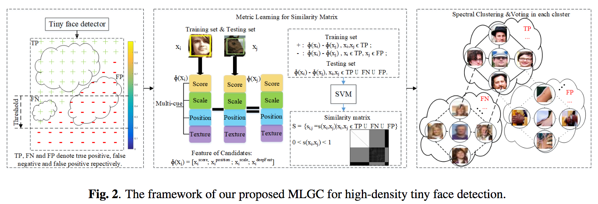
3つの著名な公開データに対して精度を向上させState-of-the-art（と主張しているが、結果のグラフが18/03/07現在論文に埋め込まれていない）。
ピクセル同士の画像対応を行い、画像変換を実行するBicycle GANを提案。従来のImage-to-Image (pix2pix)ではone-to-oneマッピングだったが、本提案ではマルチモーダル、すなわちある画像からあらゆるピクセルの対応関係を考慮した変換をおこなう（例として、図に示すような夜画像の入力からあらゆる日中の画像に変換するなど）。このアルゴリズムを構築するためにVAEベースやLatent RegressorのGANを組み合わせる。
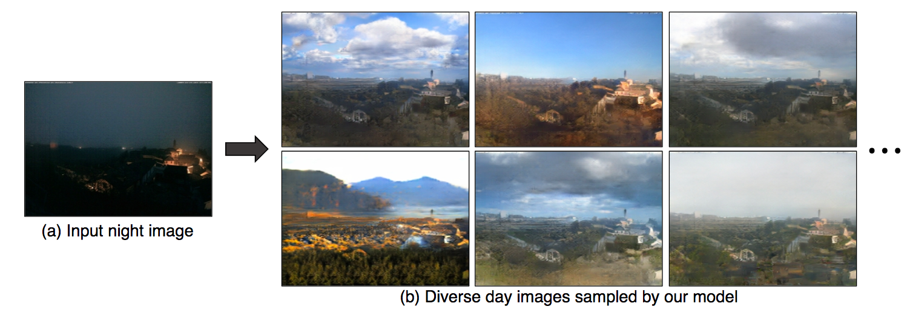
pix2pixと比較して複数の結果を出力する表現力が向上した。マルチモーダルで出力しても結果画像が崩れることなく画像生成を実現した。
AAAIに採択された、行動認識の研究。(1)より精緻な特徴量抽出、(2)異なるチャンネルの入力からの非同時性（asynchrony）を考慮して公開データベースに対する認識精度を向上させた。Coarse-, Middle-, Fine-levelの特徴量を統合して識別を実行する、さらにはそれぞれ異なる時間とチャンネル（e.g. rgb at time t & flow at time t+2）からの特徴組み合わせにより参照する尺度を変更し、特徴量をさらに強化した。
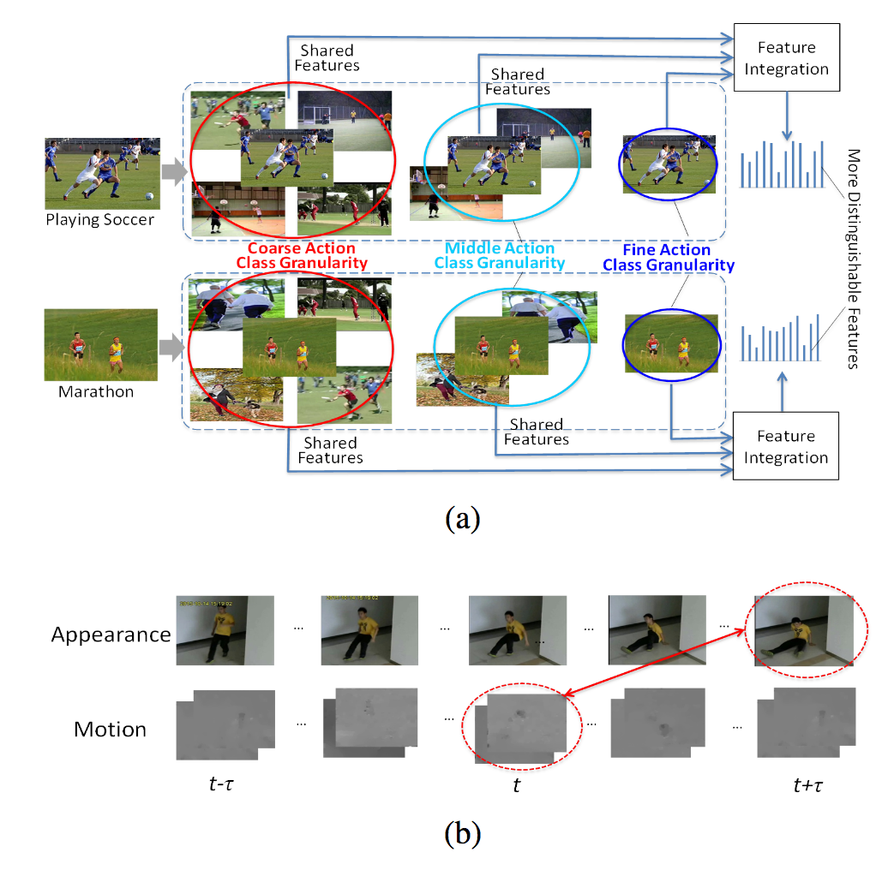
多階層の特徴量の組み合わせや非同時性を考慮した特徴抽出により手法を構成、UCF101にて95.2%、HMDB51にて72.6%を達成した。
動画によるVideoQA。マリオのプレイ動画から、発生するイベントの質疑応答を行うMarioQAを提案。イベントログを含むビデオクリップを収集し、抽出されたイベントから自動的にQAペアを生成してデータセットを構築。敵を倒す、死ぬ、ジャンプ、キック、持つなどの11個のアクションパラメータを、動画と対応させたコマンド形式で時系列にまとめたものを学習。
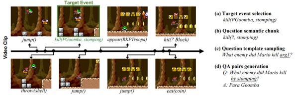
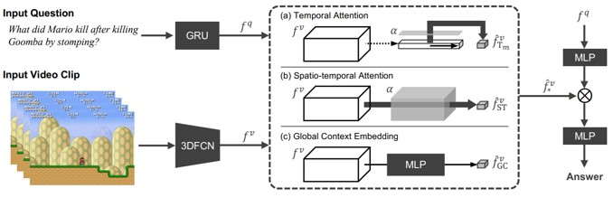
3秒以内のラベル付けされた動画像が100万以上含まれるデータセットMoments in Time Datasetを提案。今まで動画DBでありがちであった人物のみに偏ることなく、物体や動物、自然現象なども積極的に含んでいる。
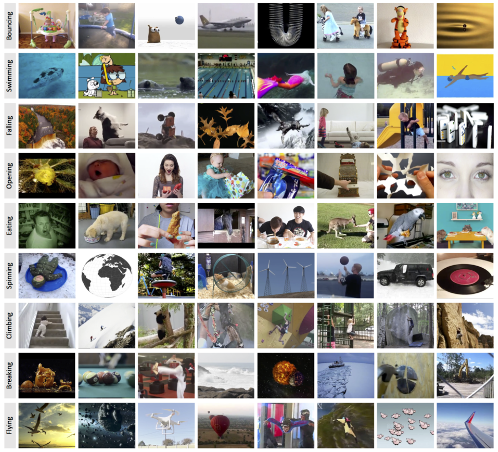
3秒以内の瞬間的な動画にすることでノイズを含まない動画になりやすく、クラス間/クラス内のDIVERSITYを考慮、人物のみに限定せず動画像を汎用的に収集、動き自体の転移を考慮してカテゴリを定義している。
自然言語のナビゲーションを入力として、実空間の中をロボットが動き目的地に到達できるかどうかを競うベンチマーク（Visually-grounded natural language navigation in real buildings）を提案。データセットは3Dのシミュレータによりキャプチャされ、22Kのナビゲーション、文章の平均単語数は29で構成される。
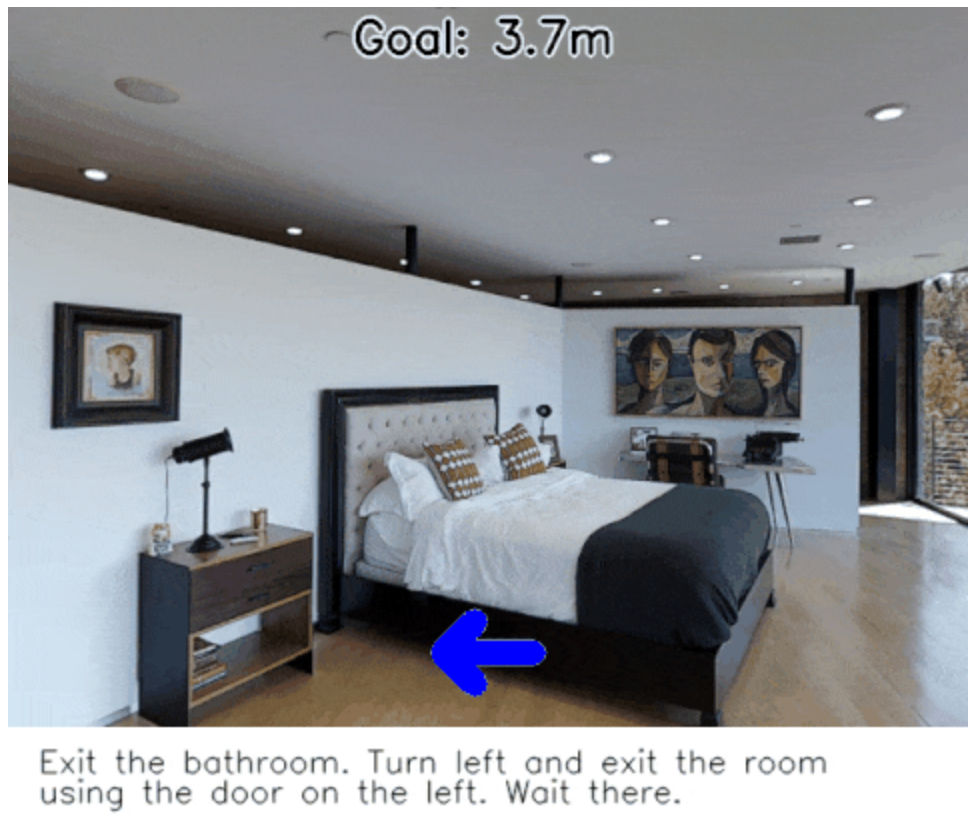
(1) Matterport3Dデータセットを強化学習を行えるように拡張。(2) 同タスクが行えるようなベンチマークであるRoom-to-Room (R2R)を提案して言語と視覚情報から実空間にてナビができるようにした。(3) seq-to-seqをベースとしたニューラルネットによりベンチマークを構築。VQAをベースにしていて、ナビゲーション（VQAでいう質問文）と移動アクション（VQAでいう回答）という組み合わせで同問題を解決する。
自然言語の問題はキャプションや質問回答の枠を超えて実空間、さらにいうとロボットタスクに導入されつつある。この研究はビジョン側からのアプローチだが、ロボット側のアプローチが現在どこまでできているか気になる。すでに屋内環境をある程度自由に移動するロボットが実現しているとこの実現可能性が高くなる。SLAMとの組み合わせももう実行できるレベルにある？
「2D画像」と「物体位置」の入力から「3D物体姿勢」と「カテゴリラベル」を出力する研究。ResNetベースのアーキテクチャを採用している。物体カテゴリが既知/未知の場合の両方で3次元物体姿勢の推定ができる。物体の回転とカテゴリ推定の同時誤差を計算する関数も定義。
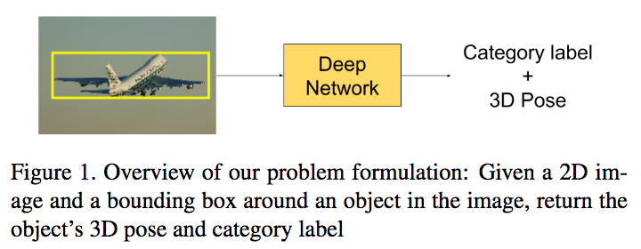
3次元物体姿勢推定とカテゴリ推定の同時回帰問題において、Pascal3D+ datasetでState-of-the-artな精度。物体カテゴリが未知の場合でもカテゴリを推定しながら3次元姿勢推定を実行することができる。
Adversarial Examples（ネットワークを騙す摂動ノイズ）に関する研究だが、特に物体識別や質問対応（Visual Question Answering）への問題を扱う。さらに、従来の問題では2D画像を取り扱っていたが、本論文では3Dレンダリングとその2D平面投影画像に拡張する。ひとつの摂動ノイズは誤差逆伝播のエラーを直接出力の2D空間に投影すること、もうひとつは敵対的ノイズを予め2D画像に構築して物理空間からレンダリングすることである。
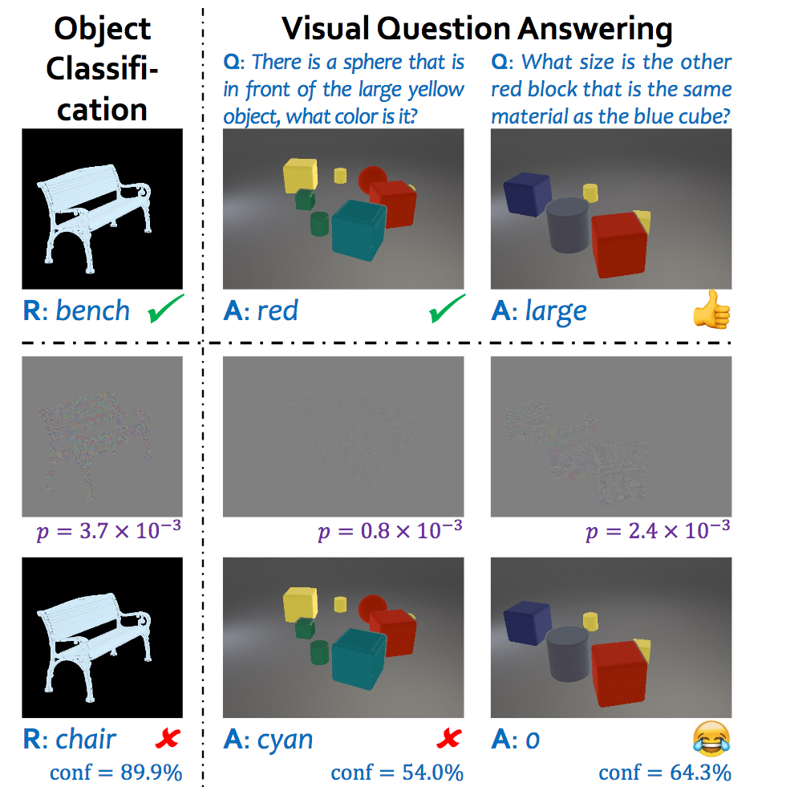
ここでは（１）3次元的な物理的空間を想定して摂動ノイズを加えることができるかどうかについて言及、（２）ノイズを含んだ攻撃画像が与えられた際に、それら攻撃から守るような適切な物理空間を構成できるかどうかを検討した。3次元的な物理空間の攻撃は、法線方向・光源・材質などを考慮しつつ出力に対して防衛可能であるため、2次元の画像空間よりも攻撃が難しいと主張。
画像空間を超えてボリュームデータに対する摂動ノイズが議論され始めた。どんな空間でも埋め込める攻撃や、それらから防衛可能な手法を汎用的に考えてみたい。また、セキュリティ分野の知見はCVにもっと導入されるべき？
マルチエージェント間の対話による言語学習を提案。SenderエージェントとReceiverエージェント間で簡単な画像当てゲームを実施。ゲームの正解のためにより良質なコミュニケーションが必要となり、言語を学習していく。また、ゲーム環境を変化させることで、単語の意味と画像がより良く対応するようになる。
Senderエージェントは、2枚の画像のうち1枚がtargetであると伝えられる。そして、これを伝えるためにReceiverエージェントにsymbol(メッセージ)を送信する。Receiverエージェントは、受信したsymbolの情報のみから、どちらの画像がtargetであるかを当てる。
SenderとReceiverに見せる画像を変える実験や、人がゲームを実施する実験を行った。
人間と生産的にコミュニケーションできるAIの開発に貢献できる。言語の習得には、大量のデータだけでなく、他者との対話が重要。また、Senderが出力したsymbol(Image Netのラベルに対応したもの)を人間に見せると68%の正解率となった。
大規模でマルチモーダルの映画ストーリー理解のためのMovieQA を解く。新しいメモリネットワークモデルのRWMN(ReadWrite Memory Network)を提案。一連のフレームを段階的に抽象化して、より高レベルの順次情報を取得し、それをメモリスロットに格納していく。CNNを多用し、読み取りネットワークと書き込みネットワークを設計。これにより、メモリの読み書き操作に高い容量と柔軟性を持たせることができる。
Embedding：ResNetとWord2Vecを用いて映画の埋め込みを行う。
Write： CNNを書き込みネットワークとして利用し、メモリテンソルを出力。
Read： CNNを使用して、一連のシーン全体をつなぎ合わせて関連付けるために、シーケンシャルメモリスロットにチャンクごとにアクセス。構成されたメモリMrを得る。
QA： 5つの候補中から最も信頼度のが高い回答を選ぶ。
ビデオのキャプションを生成するためのend-to-endかつ、sequence-to-sequenceモデルの提案。本手法のS2VTによって、一連のフレームを一連の単語に直接マッピングし、学習することができる。入力フレームの可変数の扱い、ビデオの時間構造を学習、自然な文法文の生成、この3点が本研究のコントリビューション。
各フレームのCNNの出力と、連続したLSTMに入力する。また、ビデオの時間構造をモデル化するためにオプティカルフローを算出し、フロー画像もCNNを介してLSTMに入力する。全てのフレームを読み込んだ後に、単語単位で文章を生成する。
使用データセット：MSVD, M-VAD, MPII Movie Description
CNNの表現力の向上を図る。CNNによる物体検出などでは、矩形を用いるために検出対象の物体だけでなく、余計な背景も含んでしまい精度低下につながる。可変可能な畳み込みとRoIプーリングを提案。これにより、画像の畳み込みを行う際に、重みに加えてセルの位置も学習する。特に、物体検出やセマンティックセグメンテーションなどのタスクに効果的。
画像キャプショニングの中でも、画像上にはない形容詞で表現された“感情”についてのキャプションに焦点を当てる。センチメントタームを用いた画像キャプションモデルを提案。これにより、センチメントの主観的性質に対応するマルチラベル学習を実現。FlickrとDeviantArtから、2.5Mの画像と28Mのコメントを収集し，感情に対するデータセットを構築。“コメント”はキャプションとは性質が異なるが、感情を表現するために適している(否定や不適切を除く)。
CNN→LSTMという一般的な画像キャプションの流れに、センチメント分析を行うCNNを追加する。SentiWordNetの正または負のスコアが0.5以上の単語を感情単語とする。
SentiWordNet：意見聴衆のための語彙リソース。正、負、客観性の3つの感情スコアを算出。
キャプションが適切出るかどうかと、キャプションのランク付けの2つの人間による評価。モデルからのキャプションがイメージの感情に関してより適切であるという結果となった。
「画像内のprimitiveを認識できることは高次の特徴を掴んでいる」という考えを基にした、self-supervisedな特徴表現学習手法。 画像のオリジナルとそれらを各タイルに分割したものを同じNNに入力し、出力されるタイルのprimitive数の和とオリジナルのprimitive数が一致するように学習する。 しかしそれでは出力を単に小さくするように学習することで損失を０にできてしまうので異なる画像も含めたcontrastiveな損失を用いる。
画像識別、物体検出、意味領域分割などのタスクで評価を行っており、識別ではSoTA。 学習したNNからの出力を確認すると、ノルムが大きいものは高次な物体が含まれる画像、小さいものは低次なテクスチャしか含まない画像が得られた。 これからNNが高次なprimitiveをcountしていることが考察できる。


アルバムのような時系列画像でキャプション生成を行うためのデータセット。ストーリ性のある画像キャプションデータセット：SINDを構築。10,117個のFlickrアルバム、210,819枚の写真。各アルバムは平均20.8枚。
descriptions for images in isolation (DII)：画像一枚の記述
descriptions of images in sequence (DIS)：連続画像
stories for images in sequence (SIS)：ストーリー


理由に基づいたVQA。既存の手法では，入力を出力に直接マッピングしているため，視覚的推論の学習というよりも，データの偏りを学習しているといえる。そこで，理由を伴った視覚的推論モデルを提案。モデルは、プログラムジェネレータと実行エンジンの2部構成。CLEVRベンチマークを使用し評価。回答の柔軟性、拡張性の向上。

プログラムジェネレータは、質問の読み取り、単語の羅列として表現される質問から質問に答えるためのプログラムを生成する。基本的にはLSTMのsequence-to-sequenceの考え方。
実行エンジンは、予測されたプログラムをミラーリングするニューラルモジュールネットワークを構成し、実行することで画像から回答を生成。

教師モデルと生徒モデルを分けていた従来の蒸留に対してモデル同士の相互学習を提案。ハードラベルによる交差エントロピーと対象モデル以外のモデルの出力とのKL距離を最小化するように学習する。様々なモデル同士の相互学習実験や通常の蒸留との比較、相互学習を行った場合の解がより高い汎化性能を保有していることの検証実験も行っている。


画像識別において通常の蒸留を行うよりも精度が良くなった。生徒モデルの中で相対的に小規模なモデルのみならず大規模なモデルも独立で学習を行うより精度が良かった。さらに相互学習を行うことで、wider minimaに収束しているという実験結果も得られた。特に出力される事後確率のエントロピーが大きくなるように学習されることがwider minimaへの収束を促していることがいわれている。
動き特徴を利用した前景（物体）領域情報は汎用的な表現学習に役立つという考えから、NLCなどのhand-craftな手法を組み合わせて擬似的な動体領域を作成し、それを教師として領域分割をCNNに解かせることで表現特徴を得る。物体検出、物体・行動認識、意味領域分割の問題設定において評価を行った。表現学習のデータとしてYFCCを用いている。


Pascal VOCの物体検出において教師なし表現学習でSoTA。特にfine-tuningに利用するデータが少量の場合と多くの層のパラメータを固定してfine-tuinigした場合で大きな効果を発揮した。しかし、物体・行動認識、意味領域分割においては従来手法より劣っている。
実験は丁寧に行われてる印象。表現学習の設定自体が物体検出を意識しているようにも感じられ（単一物体が写っている画像を優先的に取り出している？など）、物体検出でうまくいくのは当たり前な気もした。
しかし、意味領域分割で精度が出ない原因がよくわからなかった（物体部分はできているが背景の分割ができていない？）。1-stage物体検出手法の精度向上を図る。 YOLOやSSDなどは，矩形領域における前景と背景の面積が不均衡であるため，2-stage物体検出手法に勝てないと推測。この問題を解決するためにクロスエントロピーを再構築したFocal Lossを提案。学習時のネガティブサンプルの影響を減らすことができる。

Focal Loss
クロスエントロピーに重みを追加
→正解になりやすい背景に引っ張られなくなる
画像キャプショニングの性能向上を図る。従来のロバスト性が低いRNNに代わって，GANのフレームワークを採用することで，自然性と多様性を向上。図より，ジェネレータ(G)が文を生成し，ディスクリミネータ(E)が文や段落がどれだけうまく記述されているかを評価する。GとEを同時に学習させることにより，自然な文章を生成。


ラベルが完全に手に入らない際にでも転移学習が可能なセグメンテーション手法（論文中ではPartially Supervised Training Paradigm, weight transfer functionを紹介）を提案する。条件として、bboxが手に入っている物体に対してセグメンテーション領域を学習可能。Mask R-CNNをベースとしているが、Weight Transfer Functionを追加、セグメントの重みを学習・推定して誤差計算と学習繰り返し。

Visual Genome Datasetから3,000の視覚的概念を獲得、MSCOCOから80のマスクアノテーションを獲得した。
弱教師付き学習が現実的な精度で動作するようになってきた？アノテーションはお金や知識があっても非常に大変なタスクであり、いかに減らすかという方向に研究が進められている。（What's next?ー弱教師/教師なしの先とは？）
ワンショットで人間の教示を模倣するロボットのための学習「One-shot Imitation Learning」を提案。人間が物体を把持するなど動作を教示するとロボットが特徴や動作を学習してタスクをこなす様子を学習。Model-Agnostic Meta-Learning（MAML; ICML2017）を応用したモデルを提案し、（VR空間、人間のデモによる）教示から動作を学習する。アーキテクチャはCNNをベースとしてRGB入力から特徴を抽出、中間層（全結合層直前）からロボットの動作やバイアス項を入力してロボットの行動（pre-/post-update）を出力する。

ロボットの把持タスクをシミュレーション/実空間にておこなった。シミュレーションでは提案法のMILが1ショットで85.81%、5ショットで88.75%（従来法LSTMでは各78.38%, 83.11%）。実空間では90%を実現（従来法LSTM/contextualでは25%）。詳細にはプロジェクトページやプレゼンのビデオを参照。
CVにおけるデータセットでは，写真に対するラベル付けが一般的。写真だけでなく，イラストや風景画などに対して，以下の3属性のラベルを付加。

Behance Artistic Media Dataset
物体検出とアフォーダンス（というよりは機能？）のセグメントを同時に回帰するネットワーク、AffordanceNetに関する論文。ロボットへの把持位置/機能教示を行うことができる。基本的なモデルはMask R-CNNを適用していて、物体検出のためのbboxと物体に対する機能セグメントを正解として学習する。多タスクの誤差関数は物体カテゴリ、座標、機能セグメントの3つに関するものである。

従来、物体検知と機能推定は別個に学習・認識されていたが、本研究では多タスク学習の枠組みで、単一モデルにてEnd-to-End学習した。IIT-AFF Datasetにて73.35（SoTAは69.62）、UMD Datasetにて79.9（SoTAは77.0）。モデルも公開されており、誰もがAffordanceNetを実装できるようにしている。
画像識別における知識蒸留（Knowledge Distillation）の内容である。本論文ではある概念（e.g. 動物認識、人工物認識）ごとに教師となる識別器を事前学習しておき、それらの知識を単一の識別器に学習（これをKnowledge Concentrationと呼称）する。いわば複数の先生がある生徒に教えるという流れで学習する。

よくも悪くも、現状のCVはImageNetの1,000カテゴリに頼っているが、これを100倍の100,000カテゴリに増やして学習したらどうか？また、いかにしたら効率よく学習ができるかを検討した。結果はSingle Model（従来のようなCNNによるカテゴリ識別学習）にするよりも複数のスペシャリスト識別器から知識蒸留を行う方が効率よく、精度よく学習ができた。本論文で使用したEFT（Entity-Foto-Tree）データセットはカテゴリ数でImageNetの100倍、JFT-300Mの5倍である。

面白さ推定
面白い画像・面白くない画像の変換
結果：特に人や動物などのオブジェクトが面白さに影響
オーバーラップが少ない複数視点カメラから自動車の3次元姿勢や形状を復元する研究。CNNにより自動車のキーポイントや姿勢/3次元形状を出力する。これら情報をヒントに、カメラ視点を推定する。2D画像上でのキーポイント推定にはconv-de-convを4回繰り返すhourglassアーキテクチャを採用、3次元姿勢や形状の推定にはCross Projection Optimization (CPO)を採用し2D-3Dの投影誤差を最小化した。

物体のキーポイント検出においてState-of-the-art。6DoF推定手法 (Pavlakos, ICRA17)では12キーポイントの平均誤差が37.88であったが、提案手法では10.48まで低減した。また、回転/並進誤差も3DVP (Xiang+, CVPR15)では11.18/N/Aであったが、2.87/4.73まで向上させた。
End-to-Endでイベント検出（行動の時系列セグメント化）とキャプショニングを実行するタスクを提供する。モデルには3D Convolutionや階層的LSTM（two-level hierarchical LSTM）を採用した。基本的にはDense Captioning Events in Videosをベースにして研究を行なっているが、{Controller, Captioner} LSTMの二段階により前の候補のセンテンスやビデオコンテキストを考慮しつつ状態を更新（Controller LSTM）し、候補領域の特徴を参照しつつキャプションを生成（Captioner LSTM）する。時系列候補領域とキャプションはmulti-task学習、End-to-Endで学習される。

候補領域生成やキャプショニングの精度を検証した。また、データセットにはActivityNet CaptionsやTACoS Datasetを用いた。候補領域については従来法のDAPが30, multi-scale DAPが38 @AUC (IoU>0.8)に対して提案法であるJEDDi-Netは58.21を記録した。また、キャプショニングについては従来法が{17.95, 4.82, 17.29} (各BLEU1, METEOR, CIDEr)の問題に対して{19.97, 8.58, 19.88}を記録した。
動画のタスクはカテゴリのみでなく言語やより表現力豊かな認識ができなければいけない時期になって来た？時系列表現にもまだまだ課題が多いので、これからさらに動画認識にチャレンジすべき。また、キャプショニングの問題は感性評価に対する知見や確固たる評価方法が確立されるとさらに面白くなるのではないか。
AIが写真の感性評価やコメント生成を行なってくれる。写真とそのコメントが対応づけられた大規模DBであるAVA-Reviews dataset（52,118画像、312,708コメント）を学習することで写真を入力して図の(1)Predictionや(2)Commentsのようなものが得られる。モデルはCNNにより感性評価（Low-/High-Aesthetic category）を、CNN+LSTM（RNN）によりコメント（e.g. Fastastic colors）を出力する。

(i) 人間のような画像に対する感性評価（image aesthetics）をコンピュータに実装した。(ii)自然言語の出力により人間の高次な認知能力を実現。(iii) 画像-言語の組み合わせによるデータセットAVA-Reviews datasetを新規に構築した。
深層学習の解釈性に関する論文であり、畳み込み層の特徴マップの応答を外的に解析して対応する反応を可視化。畳み込みの各フィルタが異なる部位（e.g. 馬の耳や目）に反応するので、グラフにより解析して元画像の対象位置にアクセス。

Ground-truthなしに各部位に関する解釈性を与えたことが新規性である。図に示すように入力画像に対するパーツごとの解析をフィルタの反応やグラフの解析から可視化することができる。 さらに、異なる画像間においても一貫性のある反応を得ることができた。
深層学習は教師なしによる解釈性を獲得しているが、まだ反応している部分の可視化や部分ごとの解析が進んでいるにすぎない。さらなる発展のためには、言語的な解釈や人間にわかりやすい加工（イラストとか？）が必要になるのではないだろうか。
スマホカメラを使って非侵襲なヘモグロビン濃度の測定を実現．血中の酸素飽和度の測定などはこれまでにもあったがヘモグロビン濃度まで測定できているものはなかった． 照明条件とRGBの変化からヘモグロビン濃度を推定するためのアルゴリズムを提案．

特別な装置を使うことなく簡単にスマホカメラでヘモグロビン濃度測定を実現した点．
システムやユーザスタディの完成度や完全に実現できたときの有用性が評価された？


2つのCNNを用いた高速かつ頑強な物体追跡手法を提案. 1つ目のCNN(MagicPoint)で入力画像から特徴点を抽出し, 2つ目のCNN(MagicWarp)で抽出された特徴点の位置情報のみから２つの画像間のホモグラフィー行列の推定を行う.
MagicPointは幾何学的に安定した点（物体の角や辺など）のみを抽出するため, ノイズに頑強である. また, MagicWarpを用いることで従来手法のように特徴量の記述子（descriptor） を計算する必要がなくなるため, 高速な動作が可能となった. 作成した単純形状のデータセット（Synthetic Shapes Dataset）では FAST, Haris, Shi よりも高精度.